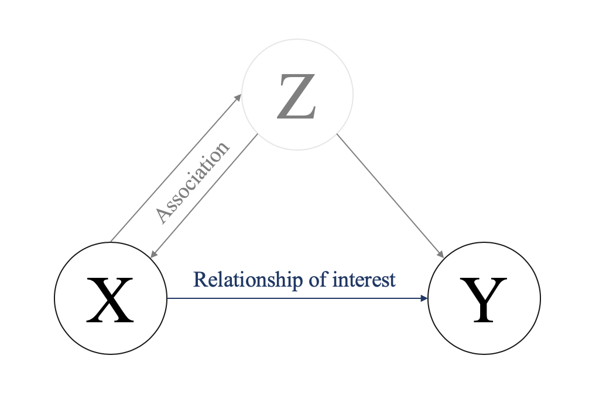
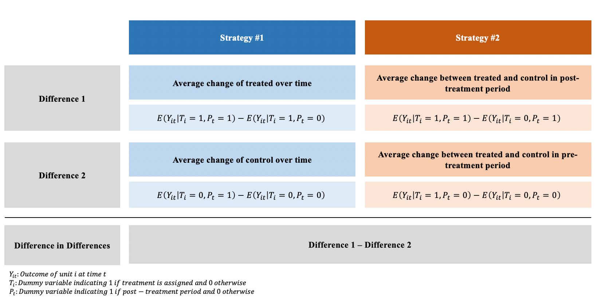
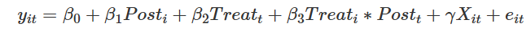
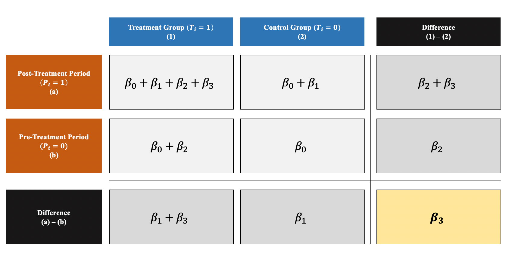
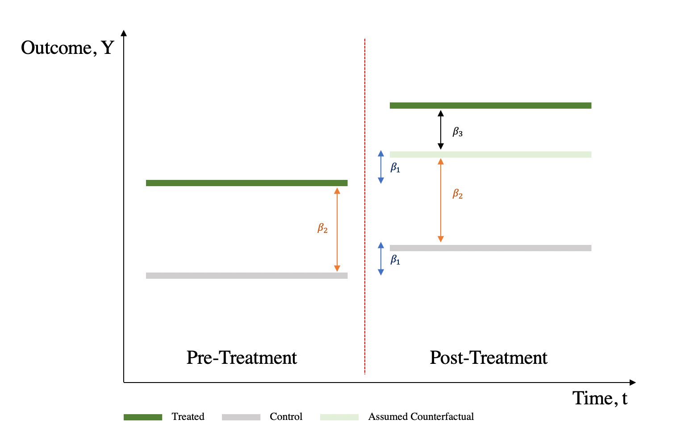

Práctica dirigida 5
FACULTAD DE CIENCIAS SOCIALES - PUCP
Curso: SOC285 - Estadística para el análisis sociológico 2
Semestre 2025 - 1
Diff-in-Diff (2)
Recordando brevemente
Sobre la relación causal:

Ilustración de la vía causal: Z es la causa tanto de X (variable independiente) como de Y (variable dependiente) y, por tanto, oscurece la relación entre X e Y.
Dif-in-Dif es una combinación de la diferencia de series temporales (compara los resultados entre los periodos anterior y posterior al tratamiento) y la diferencia transversal (compara los resultados entre los grupos de tratamiento y control):

Visualmente, Diff-in-Diff es la diferencia entre 1) cambios en el resultado entre pre-tratamiento y post-tratamiento, 2) cambios en el resultado entre grupo de control y grupo de tratamiento:

Regresión Diff-in-Diff:

Aunque es posible obtener el estimador DiD calculando las medias a mano, utilizar un marco de regresión puede resultar más ventajoso, ya que
produce errores estándar para la comprobación de hipótesis
puede ampliarse fácilmente para incluir múltiples periodos y grupos
permite añadir covariables
Efecto de tratamiento:

β0 : Valor medio de Y en el grupo de control durante el preperiodo.
β1: Variación media de Y entre el primer y el segundo periodo de tiempo que es común a ambos grupos.
β2 : Diferencia media en Y entre los dos grupos que es común en ambos periodos de tiempo.
β3 : Cambio diferencial medio en Y del primer al segundo periodo de tiempo del grupo de tratamiento en relación con el grupo de control

Workers’ Compensation and Injury Duration: Evidence from a Natural Experiment
Este artículo (Meyer, Viscusi y Durbin: 1995) examina el impacto de las prestaciones de compensación de los trabajadores en la duración de las lesiones laborales aprovechando un experimento natural creado por los aumentos significativos de las cuantías máximas de las prestaciones semanales en Kentucky y Michigan.
Los autores comparan la duración de las lesiones de las personas con mayores ingresos, que experimentaron un aumento del 50% en las prestaciones, con la de las personas con menores ingresos, cuyas prestaciones se mantuvieron sin cambios.
El estudio concluye que unas prestaciones más elevadas conllevan una mayor duración de las lesiones, con elasticidades de duración estimadas en torno a 0,3-0,4. Los resultados sugieren que las prestaciones por accidentes de trabajo influyen significativamente en las decisiones de oferta de mano de obra, ya que unas prestaciones más elevadas incentivan a los trabajadores a prolongar su baja laboral.
library(rio)
library(tidyverse) ## ── Attaching core tidyverse packages ──────────────────────── tidyverse 2.0.0 ──
## ✔ dplyr 1.1.4 ✔ readr 2.1.5
## ✔ forcats 1.0.0 ✔ stringr 1.5.1
## ✔ ggplot2 3.5.1 ✔ tibble 3.2.1
## ✔ lubridate 1.9.3 ✔ tidyr 1.3.1
## ✔ purrr 1.0.2
## ── Conflicts ────────────────────────────────────────── tidyverse_conflicts() ──
## ✖ dplyr::filter() masks stats::filter()
## ✖ dplyr::lag() masks stats::lag()
## ℹ Use the conflicted package (<http://conflicted.r-lib.org/>) to force all conflicts to become errorslibrary(broom)
library(scales) ##
## Attaching package: 'scales'
##
## The following object is masked from 'package:purrr':
##
## discard
##
## The following object is masked from 'package:readr':
##
## col_factorlibrary(modelsummary)## Warning: package 'modelsummary' was built under R version 4.4.3data=import("INJURY.DTA")Estadístico descriptivo y visuales
En primer lugar, podemos observar la distribución de las prestaciones de desempleo entre los que ganan más y los que ganan menos (nuestros grupos de control y de tratamiento):
etiquetas <- c("0" = "Low Earner", "1" = "High Earner")
ggplot(data = data, aes(x = durat)) +
# binwidth = 8 hace que cada columna represente 2 meses (8 semanas)
# boundary = 0 hace que la barra 0-8 empiece en 0 y no sea de -4 a 4
geom_histogram(binwidth = 8, color = "white", boundary = 0) +
facet_wrap(vars(highearn), labeller = labeller(highearn = etiquetas))+
labs(x = "Duración en semanas")Si utilizamos el logaritmo de la duración (ldurat), podemos obtener una distribución menos sesgada que funciona mejor con los modelos de regresión:
ggplot(data = data, mapping = aes(x = ldurat)) +
geom_histogram(binwidth = 0.5, color = "white", boundary = 0) +
facet_wrap(vars(highearn), labeller = labeller(highearn = etiquetas))+
labs(x = "Duración en semana (logaritmos)")También deberíamos comprobar la distribución del desempleo antes y después del cambio de política.
etiquetas1 <- c("0" = "Antes 1980", "1" = "Después 1980")
ggplot(data = data, mapping = aes(x = ldurat)) +
geom_histogram(binwidth = 0.5, color = "white", boundary = 0) +
facet_wrap(vars(afchnge), labeller = labeller(afchnge = etiquetas1))+
labs(x = "Duración en semana (logaritmos)")Diff-in-Diff manual
differences <- data %>%
group_by(afchnge, highearn) %>%
summarise(mean_ldurat = mean(ldurat))## `summarise()` has grouped output by 'afchnge'. You can override using the
## `.groups` argument.differences## # A tibble: 4 × 3
## # Groups: afchnge [2]
## afchnge highearn mean_ldurat
## <dbl> <dbl> <dbl>
## 1 0 0 1.20
## 2 0 1 1.41
## 3 1 0 1.22
## 4 1 1 1.63# Treatment group (high) before treatment
highb1980 <- differences[1,3]
# Control group (low) before treatment
lowb1980 <- differences[2,3]
# Treatment group (high) after treatment
higha1980 <- differences[3,3]
# Control group (low) after treatment
lowa1980 <- differences[4,3]
Diff=(highb1980-higha1980)-(lowb1980-lowa1980)
Diff## mean_ldurat
## 1 0.1883498La estimación diff-in-diff es de 0,19, lo que significa que el programa provoca un aumento de la duración del desempleo de 0,19 semanas log. Sin embargo, las semanas log no tienen sentido, así que tenemos que interpretarlo con porcentajes.
Recibir el tratamiento (es decir, tener ingresos elevados tras el cambio de política) provoca un aumento del 19% en la duración del desempleo.
before_treatment <- differences %>%
filter(afchnge == 0, highearn == 1) %>%
pull(mean_ldurat)
before_control <- differences %>%
filter(afchnge == 0, highearn == 0) %>%
pull(mean_ldurat)
after_treatment <- differences %>%
filter(afchnge == 1, highearn == 1) %>%
pull(mean_ldurat)
after_control <- differences %>%
filter(afchnge == 1, highearn == 0) %>%
pull(mean_ldurat)
diff_treatment_before_after <- after_treatment - before_treatment
diff_treatment_before_after## [1] 0.2119848diff_control_before_after <- after_control - before_control
diff_control_before_after## [1] 0.02363507diff_diff <- diff_treatment_before_after - diff_control_before_after
diff_diff## [1] 0.1883498Graficar:
ggplot(differences, aes(x = as.factor(afchnge),
y = mean_ldurat,
color = as.factor(highearn))) +
geom_point() +
geom_line(aes(group = as.factor(highearn))) +
annotate(geom = "segment", x = "0", xend = "1",
y = before_treatment, yend = after_treatment - diff_diff,
linetype = "dashed", color = "grey50") +
annotate(geom = "segment", x = "1", xend = "1",
y = after_treatment, yend = after_treatment - diff_diff,
linetype = "dotted", color = "blue") +
annotate(geom = "label", x = "1", y = after_treatment - (diff_diff / 2),
label = "Efecto del programa", size = 3) +
scale_x_discrete(labels = c("0" = "Antes de 1980", "1" = "Después de 1980")) +
labs(y = "Promedio de duración en semanas (logaritmos)") +
labs(x = "Aplicación de política") +
scale_color_discrete(name = "Grupo", labels = c("0" = "Low Earner", "1" = "High Earner"))Regresión Diff-in-Diff simple
modelo_simple <- lm(ldurat ~ highearn + afchnge + highearn * afchnge,
data = data)
summary(modelo_simple)##
## Call:
## lm(formula = ldurat ~ highearn + afchnge + highearn * afchnge,
## data = data)
##
## Residuals:
## Min 1Q Median 3Q Max
## -3.0128 -0.7214 -0.0171 0.7714 4.0047
##
## Coefficients:
## Estimate Std. Error t value Pr(>|t|)
## (Intercept) 1.19934 0.02711 44.241 < 2e-16 ***
## highearn 0.21520 0.04336 4.963 7.11e-07 ***
## afchnge 0.02364 0.03970 0.595 0.55164
## highearn:afchnge 0.18835 0.06279 2.999 0.00271 **
## ---
## Signif. codes: 0 '***' 0.001 '**' 0.01 '*' 0.05 '.' 0.1 ' ' 1
##
## Residual standard error: 1.298 on 7146 degrees of freedom
## Multiple R-squared: 0.01584, Adjusted R-squared: 0.01543
## F-statistic: 38.34 on 3 and 7146 DF, p-value: < 2.2e-16Regresión Diff-in-Diff con variables control
Una ventaja de utilizar la regresión para la diferencia en diferencias es que podemos incluir variables de control para ayudar a aislar el efecto. Por ejemplo, puede que los reclamos de los trabajadores de la construcción o la industria manufacturera tiendan a ser más largos que los de los trabajadores de otros sectores. O puede que las reclamaciones por lesiones de espalda tiendan a ser más largas que las reclamaciones por lesiones de cabeza. También podríamos controlar los datos demográficos de los trabajadores, como el sexo, el estado civil y la edad.
modelo_variables_cont <- lm(ldurat ~ highearn + afchnge + highearn * afchnge +
male + married + age + hosp + lprewage,
data = data)
summary(modelo_variables_cont)##
## Call:
## lm(formula = ldurat ~ highearn + afchnge + highearn * afchnge +
## male + married + age + hosp + lprewage, data = data)
##
## Residuals:
## Min 1Q Median 3Q Max
## -4.2182 -0.7905 0.0702 0.7459 4.3046
##
## Coefficients:
## Estimate Std. Error t value Pr(>|t|)
## (Intercept) -1.662725 0.291958 -5.695 1.28e-08 ***
## highearn -0.291619 0.066404 -4.392 1.14e-05 ***
## afchnge 0.057927 0.036998 1.566 0.117467
## male -0.131697 0.038406 -3.429 0.000609 ***
## married 0.022324 0.033629 0.664 0.506816
## age 0.007882 0.001222 6.452 1.18e-10 ***
## hosp 1.078933 0.032773 32.922 < 2e-16 ***
## lprewage 0.456675 0.056115 8.138 4.73e-16 ***
## highearn:afchnge 0.162221 0.058943 2.752 0.005936 **
## ---
## Signif. codes: 0 '***' 0.001 '**' 0.01 '*' 0.05 '.' 0.1 ' ' 1
##
## Residual standard error: 1.189 on 6835 degrees of freedom
## (306 observations deleted due to missingness)
## Multiple R-squared: 0.1678, Adjusted R-squared: 0.1668
## F-statistic: 172.3 on 8 and 6835 DF, p-value: < 2.2e-16library(stargazer)##
## Please cite as:## Hlavac, Marek (2022). stargazer: Well-Formatted Regression and Summary Statistics Tables.## R package version 5.2.3. https://CRAN.R-project.org/package=stargazerstargazer::stargazer(modelo_simple,modelo_variables_cont, type='text')##
## ======================================================================
## Dependent variable:
## --------------------------------------------------
## ldurat
## (1) (2)
## ----------------------------------------------------------------------
## highearn 0.215*** -0.292***
## (0.043) (0.066)
##
## afchnge 0.024 0.058
## (0.040) (0.037)
##
## male -0.132***
## (0.038)
##
## married 0.022
## (0.034)
##
## age 0.008***
## (0.001)
##
## hosp 1.079***
## (0.033)
##
## lprewage 0.457***
## (0.056)
##
## highearn:afchnge 0.188*** 0.162***
## (0.063) (0.059)
##
## Constant 1.199*** -1.663***
## (0.027) (0.292)
##
## ----------------------------------------------------------------------
## Observations 7,150 6,844
## R2 0.016 0.168
## Adjusted R2 0.015 0.167
## Residual Std. Error 1.298 (df = 7146) 1.189 (df = 6835)
## F Statistic 38.342*** (df = 3; 7146) 172.284*** (df = 8; 6835)
## ======================================================================
## Note: *p<0.1; **p<0.05; ***p<0.01